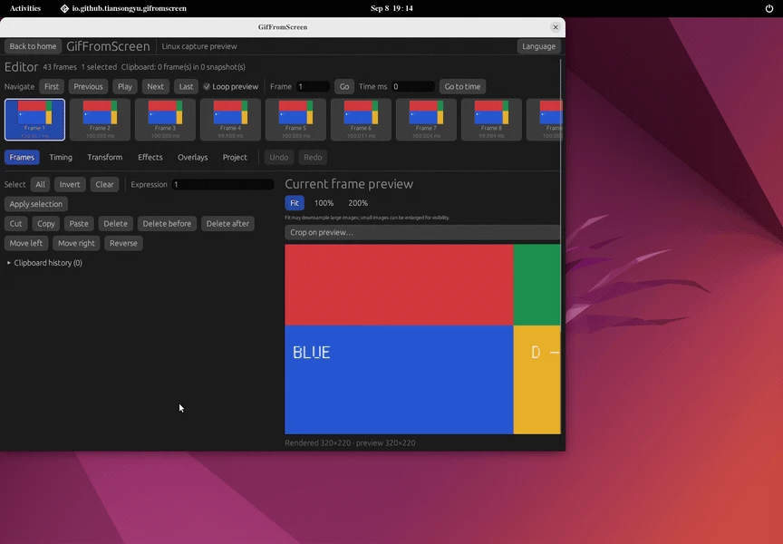
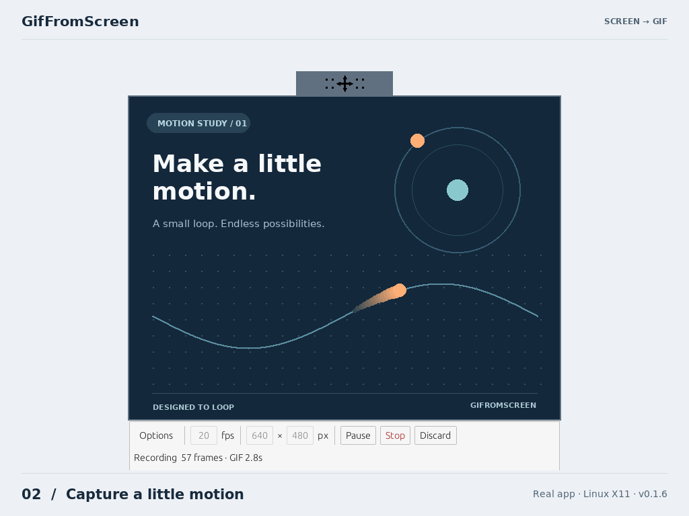

A timeline you can shape.
Select, reorder, cut and duplicate frames. Adjust delays, remove duplicates or make a Yoyo loop. Undo and redo as you go.
A screen recorder. A frame editor. Built in Rust.
Capture, edit and export, right on your Linux desktop.
Linux x86_64 X11 & Wayland Local processing

From a quick explanation to a tiny tutorial.
One workflow, from capture to GIF.

Resize before recording. Pause, move your region and pick up where you left off. Keep the controls outside your capture.
Version 0.1.4 screenshots. Play shows an earlier X11 recording. Recording details
Select, reorder, cut and duplicate frames. Adjust delays, remove duplicates or make a Yoyo loop. Undo and redo as you go.
Add captions, arrows, shapes and watermarks. Crop, resize, rotate and add transitions. Keep annotations in editable layers.
Save a .gfsproj project and return later. Incremental recording saves preserve written frames for recovery after an interruption.
Recording, editing and GIF encoding happen on your machine. Import images, GIFs or video. Video import uses your system's FFmpeg.
Install the latest stable release for Linux x86_64.
curl --proto '=https' --tlsv1.2 -LsSf https://github.com/tiansongyu/gifromscreen/releases/latest/download/gifromscreen-installer.sh | shNo Rust toolchain or administrator access needed. Requires Python 3.8+ and glibc 2.35+. The installer verifies SHA-256 checksums and installs to ~/.local.
The current stable package is v0.1.5, with text reflow fixes for narrow windows and enlarged fonts. A working OpenGL ES or Vulkan driver is required. Wayland recording uses PipeWire and your desktop's xdg-desktop-portal backend; keep recorder controls outside a monitor capture. GIF export does not include audio. Camera and broader desktop, monitor and DPI coverage are still being verified.
On X11/NVIDIA, if v0.1.0 reports incompatible_surface_backends, launch with WGPU_BACKEND=vulkan gif-from-screen. Startup fix and details.
Packages are unsigned; checksums detect download corruption. Upgrades verify the existing files and keep a rollback copy. Newer installed versions are preserved unless you explicitly request a downgrade. Installation and removal.